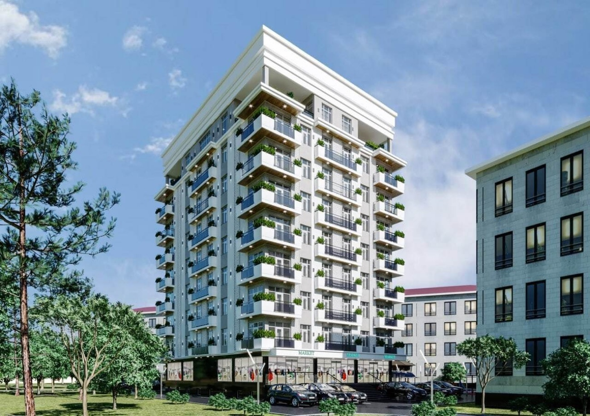

Shohsaroy Towers
Yashnobod tumani
1 xonali 39 900 $ dan
Batafsil

Ixcham va oilaviy yashash uchun 9 qavatli uy
Vega — Shohsaroy Uylari kompaniyasining ikkinchi loyihasi. Yunusobod tumani, Ahmad Donish ko'chasidagi 9 qavatli zamonaviy bino, 100 ga yaqin xonadon.
Majmua 2020-yilda topshirilgan. Hudud yopiq va xavfsizlik tizimlari bilan ta'minlangan, bolalar maydonchasi, yashil hudud va avtoturargoh bor.
Yopiq hudud va xavfsizlik tizimlari
Bolalar maydonchasi va yashil hudud
Avtoturargoh
Ikkilamchi sotuvdagi xonadonlar va kompaniyaning yangi loyihalari bo'yicha maslahat olishingiz mumkin.
Toshkent, Yunusobod tumani, Ahmad Donish ko'chasi
Menejer joriy narxlar, bo'sh qavatlar va to'lov jadvalini yuboradi.